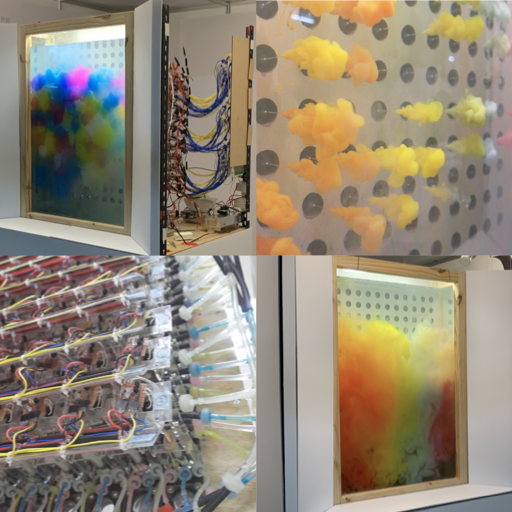

I am starting my phd in computing science at Simon Fraser University, under the guidance of Xing-Dong Yang.
I received my master's degree in artificial intelligence from National Chiao Tung University, Taiwan, where I was advised by Yu-Chee Tseng and Jen-Jee Chen under PAIR Labs.
My research interests lie at the intersection of machine learning and human-computer interaction, where I am passionate about leveraging these two fields to build intelligent machines that understand the environment from sensory inputs and to create novel interfaces that deliver seamlessly interaction.
I am starting my phd in computing science at Simon Fraser University, under the guidance of Xing-Dong Yang.
I received my master's degree in artificial intelligence from National Chiao Tung University, Taiwan, where I was advised by Yu-Chee Tseng and Jen-Jee Chen under PAIR Labs.
My research interests lie at the intersection of machine learning and human-computer interaction, where I am passionate about leveraging these two fields to build intelligent machines that understand the environment from sensory inputs and to create novel interfaces that deliver seamlessly interaction.
Our upcoming paper presents a system that is designed to generate color images from thermal heatmaps, which can be used to preserve privacy during video conferencing.
My thesis work involves developing a GAN-based image synthesis model that uses low-resolution thermal heatmap conditioning. Our proposed SPADE-SR network provides a more efficient method for handling low-resolution semantic information.
Gesture-based Intention Prediction for Automatic Door Opening using
Low-Resolution Thermal Sensors: A U-Net-based Deep Learning Approach Sheng-Ya Chiu,
Sheng-Yang Chiu,
Yu-Ju Tu, Chi-I Hsu
IEEE Eurasia Conference on IOT, Communication and Engineering (ECICE), 2021 [paper link]
Our approach involves training a pose classification network using low-resolution thermal heatmaps to signal automatic doors for opening. To improve the network's performance, we added an auxiliary task of segmentation.
Smart Rabbit - A Wearable Device As Intelligent Pacer for Marathon Runners Wenpei Zheng,
Sheng-Yang Chiu, Jui-Chien Hsieh, Chaochang Chiu
IEEE International Conference on
Application-specific Systems, Architectures and Processors (ASAP), 2019 [paper link][media coverage 1][2]
The paper presents our 2nd prize-winning project at 2018 The 4th China Mobile Internet Innovation Contest. Based on personal information and real-time speed, heart rate, and terrain data, our system guides the runner with appropriate paces to maintain a safe cardio load.
A Convolutional Neural Networks Approach with Infrared Array Sensor for Bed-Exit Detection Sheng-Yang Chiu,
Jui-Chien Hsieh, Chi-I Hsu, Chaochang Chiu
International Conference on System Science and Engineering, 2018 [paper link]
A bed-exit detection network that is based on a thermopile array sensor.
PROJECTS
Research on Intelligent Diagnosis of Motor Faults Sheng-Yang Chiu,
Tzu-Ti Wei, Tzu-Hsuan Hsu, Jen-Jee Chen
Joint Project with ITRI, 2021
To detect anomalies in electric motors, we experimented with different feature extraction networks, including VAE and GraphAE, as well as various clustering analysis techniques, such as KNN and OC-SVM, based on sensor readings.
Low-Resolution Heatmap Segmentation based on Thermopile Array Sensor Sheng-Yang Chiu Coursework, 2020
Segmenting human masks from low-resolution thermal images.
An interactive game that utilizes a trampoline as an input device. The system uses ultrasonic sensors to detect landing positions, which are then analyzed using a neural network prediction.

Development of art installation “Inverted Tinge” Sheng-Yang Chiu, Yihe Wang, Pei-Ying Lin, You-Ze Lin, Chen-Yu Zhou, Chuchu Du
Undergraduate Graduation Project, 2019 [project page]
This interdisciplinary project involved the use of a machine with hundreds of custom-built, individually controlled motorized ink nozzles that were submerged in a water tank. The aim was to explore the possibility of a fluid interface using this technology. The project was made possible by a team of six individuals, each with different skills, who worked together effectively. Despite the team's great efforts, the project almost failed.
Development of kinetic sculpture “Whale Fall” Sheng-Yang Chiu,
Yihe Wang, Chuchu Du, Pei-Yu Liao, Mu-Ping Deng, Yun-Ju Chen
Coursework, 2018 [project page]
A custom-built motor array was used to create a kinetic sculpture that simulates the movements of a whale in the ocean. The work was recognized as a semifinalist in the Adobe Design Achievement Awards (ADAA).
Auto Design Tool for Heavy-Duty Metal Packaging Optimization Cooperation Project, 2017
This project involves using genetic algorithms to optimize the geometry of heavy-duty metal packages. The most difficult aspect of this project was mastering the CAD/CAE tools and their APIs (CATIA). We complete a 36-hour training course and receive three certifications. The system is operated through a GUI, developed using the .NET framework.
PERSONAL
I’ve been playing drums in Sunday services for 4 years. Playing in a church band is a practice of worship, endurance, improvisation, and discipline. I also do sound engineering at church (mainly broadcasting, sometimes FoH) since 2014. When I was in high school, my dream was to open a recording studio. Apparently, the path has gone very differently.
Besides my major, I'm into a lot of things. My first-tier interests are automobiles, airplanes, and home appliances. I also love history and art; my favorite place in Taiwan is the National Palace Museum, which has the world's largest collection of Chinese artifacts. Before the thought of becoming a sound engineer, I wanted to be an architect.
My siblings and I own too many fluffy friends. The largest group of them are kiwis made by Nici, however, my favorite stuffed toy manufacturer is Jellycat. I currently play badminton weekly, I'm okay at doubles but I suck at singles. My teammate and I won the first runner-up in a game in Taichung last summer.
I’ve been playing drums in Sunday services for 4 years. Playing in a church band is a practice of worship, endurance, improvisation, and discipline. I also do sound engineering at church (mainly broadcasting, sometimes FoH) since 2014. When I was in high school, my dream was to open a recording studio. Apparently, the path has gone very differently.
Besides my major, I'm into a lot of things. My first-tier interests are automobiles, airplanes, and home appliances. I also love history and art; my favorite place in Taiwan is the National Palace Museum, which has the world's largest collection of Chinese artifacts. Before the thought of becoming a sound engineer, I wanted to be an architect.
My siblings and I own too many fluffy friends. The largest group of them are kiwis made by Nici, however, my favorite stuffed toy manufacturer is Jellycat. I currently play badminton weekly, I'm okay at doubles but I suck at singles. My teammate and I won the first runner-up in a game in Taichung last summer.